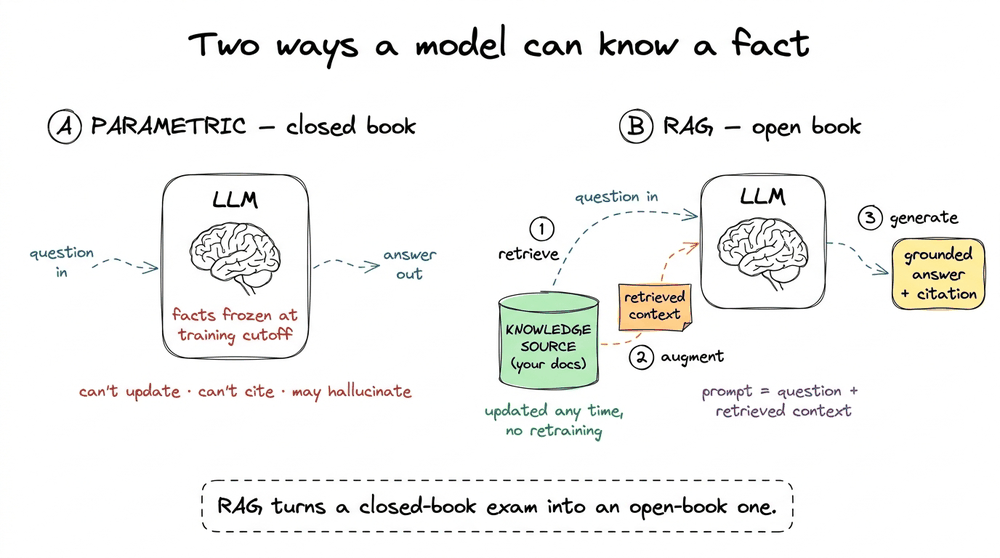
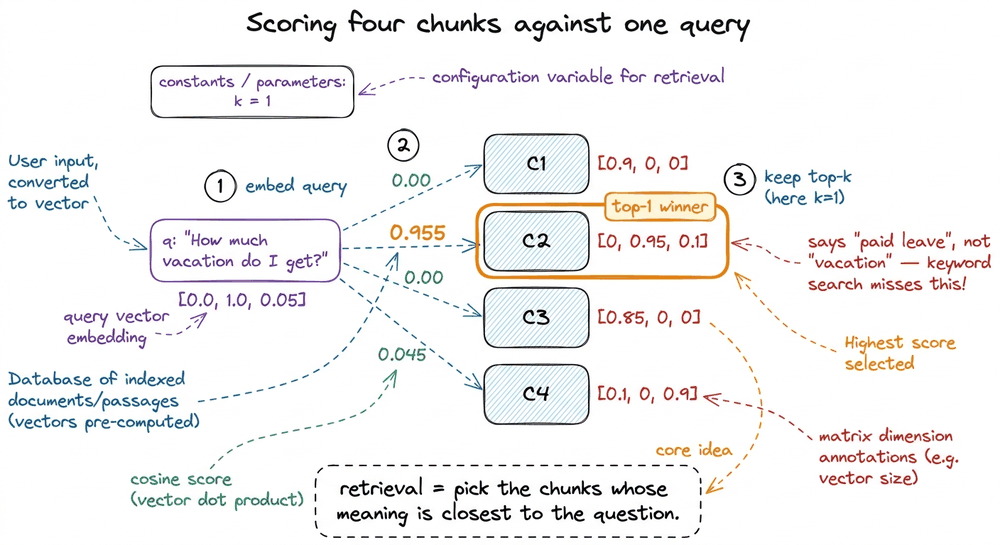
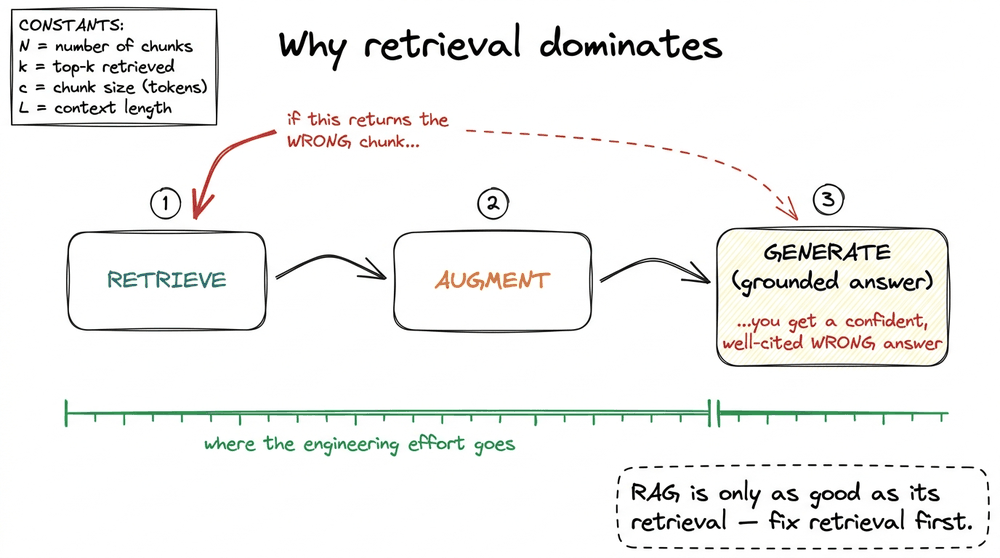
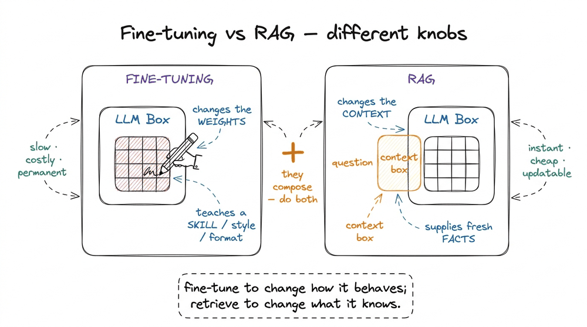
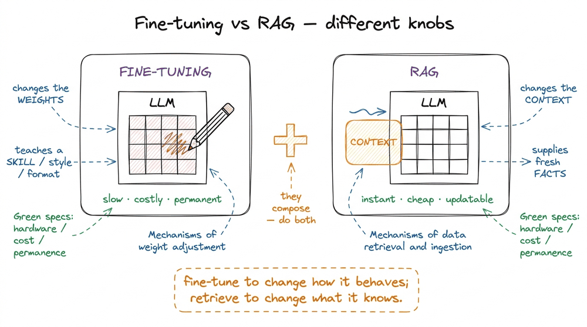

What Is Retrieval-Augmented Generation?
📝 15 annotationsWhat Is Retrieval-Augmented Generation?
The previous chapter, why RAG exists, left us with a complaint: a bare language model knows only what it memorized during training, it will confidently invent the rest, and it can never tell you where an answer came from. This chapter is the fix, stated precisely. I want to move you from "retrieval sounds like a good idea" to a definition sharp enough that you could implement it — and could spot, in any system, whether it is doing RAG or only pretending to.
So let me build the definition the way it actually clicked for me: first the one sentence, then the mechanism, then a concrete four-chunk example with the arithmetic worked out on a napkin, and finally the line that separates real grounding from theater.
The one-sentence definition
Retrieval-Augmented Generation (RAG) is the technique of augmenting a language model's generation with context that is retrieved at query time from an external knowledge source, instead of relying only on the model's parametric memory — the facts baked into its weights during training.11 The term was coined by Lewis et al. in the 2020 paper "Retrieval-Augmented Generation for Knowledge-Intensive NLP Tasks" (Facebook AI, now Meta). The idea of pairing a retriever with a generator is older; that paper is where the name and the modern framing stuck. That is the whole thing. Everything else in this book — chunking, embeddings, re-ranking, evaluation — is engineering in service of that one sentence.
Read it twice, because two phrases carry all the weight. At query time: the knowledge shows up when the user asks, not when the model was trained, so it can be as fresh as the last document you indexed a second ago. External knowledge source: the facts live outside the weights, in a place you own and can update, audit, and cite — a folder of PDFs, a wiki, a database — not smeared across billions of parameters you cannot inspect.
The cleanest way to feel the definition is to contrast the two ways a model can "know" something.

figure rendering · Left: a bare model answers from frozen weights (closed book). Right: RThe metaphor in that takeaway box is the one to keep: a bare LLM is a student taking a closed-book exam, answering from memory alone. RAG hands the same student an open book — the relevant pages, pulled just in time — and asks them to answer from what is in front of them. The student's reasoning ability is unchanged; what changes is that they no longer have to have memorized the textbook.
The mechanism in three moves
Underneath the metaphor, RAG at query time is exactly three steps, always in this order.22 There is a whole offline half of RAG — ingesting documents, chunking them, embedding each chunk, and loading the vectors into an index — that happens before any user shows up. We treat that build-time pipeline in the RAG pipeline end to end. This chapter is about what happens the instant a query arrives.
- Retrieve. Take the user's query and use it to fetch the most relevant pieces of the external knowledge source — typically the top-k most similar chunks (small passages of your documents). "Similar" almost always means semantically similar, found by comparing vector embeddings, but the definition of RAG does not require any particular retrieval method.
- Augment. Assemble those retrieved chunks into the prompt, alongside the original question and an instruction. This assembled prompt is the "open book" the model gets to read.
- Generate. Send that augmented prompt to the LLM, which writes an answer grounded in the supplied context — ideally with citations pointing back to which chunk each claim came from.
Retrieve, augment, generate — that is where the three letters of RAG come from, and they map one-to-one onto the three moves. A useful sanity check falls straight out of this: if a system never fetches anything at query time and answers purely from the model's weights, it is not RAG, no matter how good it is; and if it fetches something but the model ignores it, that is RAG failing — a distinct failure mode we return to in where naive RAG breaks. Notice that the model itself is untouched — same weights, same architecture. RAG is not a new kind of model; it is a wrapper that decides what the model reads before it answers.
A concrete pass, with the arithmetic
Abstractions are slippery, so let me run one query through a tiny toy corpus and show every number. Suppose our external knowledge source is a company handbook, already chopped into just four chunks (real corpora have millions, but four is enough to see the mechanism):
C1: "The office is open Monday to Friday, 9am to 6pm."C2: "Employees accrue 1.5 days of paid leave per month, capped at 24 days a year."C3: "The cafeteria serves lunch between 12pm and 2pm."C4: "Reimbursements are processed on the last Friday of each month."
The user asks: "How much vacation do I get?"
In a real system, both the query and each chunk are turned into embeddings — fixed-length dense vectors where semantic closeness shows up as geometric closeness.3 We build embeddings properly in what embeddings actually encode. For this chapter, treat the embedding as a black box: text goes in, a vector comes out, and vectors for text about the same idea land near each other. To keep the arithmetic honest and visible, imagine a cartoon 3-dimensional embedding where the axes happen to mean [time-of-day, leave/vacation, money]. The chunks might embed to:
C1→[0.9, 0.0, 0.0](all about hours)C2→[0.0, 0.95, 0.1](all about leave)C3→[0.85, 0.0, 0.0](hours again)C4→[0.1, 0.0, 0.9](money)
The query "How much vacation do I get?" embeds to roughly q = [0.0, 1.0, 0.05] — overwhelmingly about leave. Retrieval scores each chunk against the query with cosine similarity, which for these already-normalized-ish vectors is close to the dot product q · C:
q · C1= (0)(0.9) + (1)(0.0) + (0.05)(0.0) = 0.00q · C2= (0)(0.0) + (1)(0.95) + (0.05)(0.1) = 0.955q · C3= (0)(0.85) + (1)(0.0) + (0.05)(0.0) = 0.00q · C4= (0)(0.1) + (1)(0.0) + (0.05)(0.9) = 0.045
With top-k = 1, retrieval returns C2 — the leave policy — and nothing else. The word "vacation" never appears in C2; it says "paid leave." A keyword search for "vacation" would have returned nothing. Semantic retrieval found it anyway, because "vacation" and "paid leave" sit near each other in embedding space. That is the quiet magic of the retrieve step.

figure rendering · The query is scored against every chunk by similarity; C2 wins with 0.Now the augment step. We drop the winning chunk into a prompt template that also tells the model how to behave:
prompt = f"""Answer the question using ONLY the context below.
If the context does not contain the answer, say "I don't know."
Cite the source chunk in brackets.
Context:
[C2] {C2}
Question: How much vacation do I get?
"""And the generate step hands that to the LLM, which now answers from the open book in front of it:
"You accrue 1.5 days of paid leave per month, up to a maximum of 24 days per year. [C2]"
Every fact in that sentence traces to C2. If we later change the handbook to 30 days, we re-index one chunk and the next query returns the new number — no retraining, no fine-tuning, no waiting for the next model release. That update loop is the entire commercial case for RAG.
Why the choice of top-k trips people up
I used top-k = 1 above because our toy corpus had exactly one relevant chunk. Real systems almost never get that clean, and the first knob newcomers reach for is top-k: if one chunk gave a good answer, surely retrieving more chunks gives a better one? It does not, and this is worth internalizing before you build anything. Turning k up buys recall (you are more likely to grab the chunk that actually holds the answer) but it also drags in noise (chunks that scored high enough to make the cut yet contribute nothing). Look back at our scores: at k = 4 the model would have received C1, C3, and C4 (about hours, hours, and reimbursements) stapled to the one chunk it needed, and every one of those irrelevant lines still costs tokens and still competes for the model's attention.
Put small numbers on it. Say each chunk is roughly 120 tokens. At k = 5 that is 600 tokens of context; at k = 20 it is 2,400, and the signal-to-noise ratio falls as the extra chunks are, by definition, worse matches than the top few. Worse, models attend unevenly across a long prompt: a fact buried in the middle of twenty chunks is read less carefully than the same fact sitting first or last, a well-documented effect often called "lost in the middle." So more retrieval can produce a worse answer than less. The right top-k is the smallest number that reliably contains the answer, not the largest your context window can hold. We tune it deliberately in the retrieval step; for now just carry the instinct that bigger is not safer.

figure rendering · At k=1 the model reads one on-target chunk; at k=5 the same answer isWhat "grounded" actually buys you
It is tempting to think RAG just makes answers more accurate. It does more than that, and the extra properties are why every serious production system reaches for it.
Freshness. The answer reflects the knowledge source as of right now, so it sidesteps the model's training cutoff entirely. Index a document at 3:00pm and it is answerable at 3:01pm.
Attribution. Because each claim came from an identified chunk, you can show the user where it came from — the [C2] citation above is not decoration, it is a receipt. A closed-book model cannot give you this; it has no idea which of its billions of weights produced a given sentence.
Groundedness against hallucination. The instruction "answer ONLY from the context, else say 'I don't know'" turns the model from a confident guesser into a reader.44 This is why the phrase "answer only from the provided context" is doing real work, not politeness. Without it, the model happily blends retrieved facts with whatever its weights half-remember, which is exactly the hallucination you were trying to prevent. We make this instruction airtight in generation, grounding, and citations. It cannot invent a leave policy that was never retrieved — or rather, a well-built RAG system makes inventing one much harder and detectable.
Here is the honest caveat, and it is the most important sentence in this chapter: RAG is only as good as its retrieval. If the retrieve step hands the model the wrong chunk, the model will faithfully, fluently ground its answer in the wrong chunk — a confident, well-cited wrong answer. Garbage in, grounded garbage out. That single fact is why the rest of this book spends far more pages on retrieval quality (chunking, embeddings, re-ranking, evaluation) than on the generation step. The generator is rarely the bottleneck; the retriever almost always is.

figure rendering · The three stages chained: a wrong retrieval poisons everything downstrRAG is not fine-tuning (and they compose)
One confusion worth killing early: RAG and fine-tuning are not competitors solving the same problem — they change different things.5 A rough rule of thumb from the field: fine-tune to teach the model how to behave (a format, a tone, a task pattern); use RAG to give it what to know (facts, documents, current data). We give this its own chapter — RAG vs fine-tuning vs long context — because the tradeoff decides real architectures. Fine-tuning changes the weights: you continue training the model on examples so it learns a new skill, style, or format — it is slow, expensive, and bakes the change permanently into the parameters. RAG changes the context: it leaves the weights alone and instead supplies fresh facts at inference time.
So they are complementary. You might fine-tune a model to always answer in your company's clipped support-ticket voice, and use RAG to feed it today's product documentation. One shapes behavior, the other supplies knowledge, and a mature system often does both.

figure rendering · Fine-tuning edits the weights to teach a skill; RAG feeds context to sThe takeaway, and where we go next
Compress everything to one line you can carry: RAG replaces "what does the model remember?" with "what did we just retrieve and put in front of it?" — trading a closed-book exam for an open-book one, and trading unverifiable parametric recall for fresh, citable, external context. The model's job shrinks from know everything to read carefully and answer from what you were given, which is a job it is far better at and one you can actually audit.
And the corollary that will steer the entire book: since the model can only answer from what retrieval hands it, the quality of a RAG system is decided long before generation — in how you cut your documents, how you embed them, and how you search. Get a chunk wrong and no amount of prompt-craft saves you.
We now have a crisp definition and the three-move loop. In the next chapter we zoom all the way out and lay the complete machine on the table — the offline build path and the online query path together — in the RAG pipeline end to end.